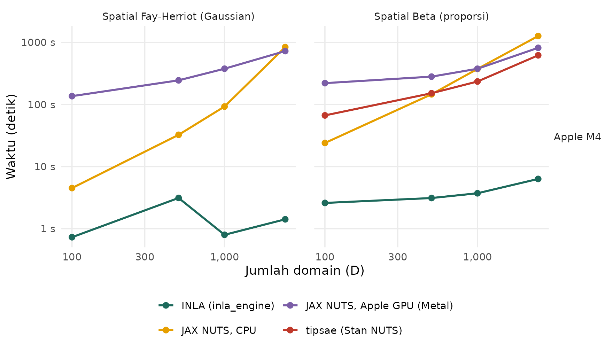

Engine hb_area(): INLA vs JAX (CPU, Apple GPU, CUDA) vs tipsae
Source:vignettes/articles/id/hb-area-engines.Rmd
hb-area-engines.RmdTerjemahan dari versi bahasa Inggris. Penjelasan istilah ada di Daftar Istilah.
hb_area() dapat diestimasi dengan dua engine:
-
inla_engine()(bawaan): integrated nested Laplace approximation dengan INLA. -
jax_engine(): MCMC penuh dengan No-U-Turn sampler dari NumPyro di atas JAX. Berjalan di CPU, di GPU NVIDIA (device = "cuda"), atau di GPU Apple silicon (device = "metal").
Waktu INLA di halaman ini diukur dalam mode "compact"
bawaan INLA. Sejak fastsae 1.0.0, model Gaussian diestimasi dalam mode
"classic" INLA, yang lebih akurat untuk model tersebut
(lihat bagian Engines pada ?hb_area) dan memakan waktu
kurang lebih sama pada pengecekan kami; family lainnya masih memakai
mode compact.
Halaman ini membandingkan kecepatan kedua engine, di CPU dan di GPU, serta seberapa dekat estimasi keduanya. Perbandingan memakai model area-level spasial. Untuk model Beta, perbandingan juga menyertakan paket tipsae, yang mengestimasi model yang sama dengan MCMC di Stan.
Hasil NVIDIA GPU (CUDA) menyusul. Hasilnya akan ditambahkan di sini dan dapat direproduksi dengan notebook yang ditautkan di akhir halaman ini.
Pengaturan
Model.
-
Data: grid reguler berisi
sel dengan queen adjacency, disimulasikan dengan
sim_area_data(D = n, W = W, n_unsampled = 0, seed = 42 + n). -
Gaussian:
hb_area(y_gaussian ~ x1 + x2, spatial = "besag"), model Fay-Herriot dengan efek area intrinsic CAR (Besag). -
Beta:
hb_area(y_beta ~ x1 + x2, family = "beta", spatial = "besag"). tipsae mengestimasinya denganfit_sae(likelihood = "beta", spatial_error = TRUE), yang juga memakai efek ICAR.
tipsae dijalankan hanya untuk model Beta, sampai .
| Mesin | CPU | GPU | Software | Tanggal |
|---|---|---|---|---|
| Apple M4 | Apple M4 (10 core, RAM 16 GB) | Apple M4 | R 4.6.1; fastsae 1.0.0; INLA 26.8.7; tipsae 1.0.3; jax 0.5.0, jaxlib 0.5.0, jax-metal 0.1.1, numpyro 0.19.0 | 2026-10-24 |
Setiap engine dijalankan dalam proses R terpisah, karena JAX
menetapkan device-nya pada fit pertama dalam suatu sesi. Setiap fit
dijalankan 2 kali pada data yang sama. Penjalanan pertama mencakup
kompilasi JAX; tabel dan gambar menampilkan penjalanan warm yang lebih
cepat (explorer juga dapat menampilkan penjalanan pertama). JAX memakai
default jax_engine() (2 chain × 1.000 draw setelah 500
warmup), dan tipsae memakai defaultnya sendiri. Kodenya ada di benchmarks/bench_hb_area_engines.R.
Membandingkan mesin. Waktu yang diukur pada mesin berbeda tidak dapat dibandingkan satu sama lain. Yang dapat dibandingkan adalah rasio dalam satu mesin: GPU vs CPU, dan INLA vs tipsae.
Waktu Komputasi
Pilih model, mesin, dan jenis waktu yang ditampilkan. Arahkan kursor ke sebuah titik untuk melihat waktu, device, dan R-hat dari fit tersebut.
Gambar statis (semua mesin)

Waktu komputasi warm (skala log). Makin rendah makin cepat. Satu baris per mesin.
| Mesin | Model | D | INLA | JAX CPU | JAX GPU | GPU vs CPU | tipsae | INLA vs tipsae |
|---|---|---|---|---|---|---|---|---|
| Apple M4 | Gaussian | 100 | 0.7 s | 4.5 s | 136 s (metal) | 30.3x lebih lambat | - | - |
| Apple M4 | Gaussian | 500 | 3.1 s | 32 s | 245 s (metal) | 7.5x lebih lambat | - | - |
| Apple M4 | Gaussian | 1,000 | 0.8 s | 93 s | 377 s (metal) | 4.1x lebih lambat | - | - |
| Apple M4 | Gaussian | 2,500 | 1.4 s | 841 s | 725 s (metal) | 1.2x lebih cepat | - | - |
| Apple M4 | Beta | 100 | 2.6 s | 24 s | 221 s (metal) | 9.2x lebih lambat | 67 s | 26x lebih cepat |
| Apple M4 | Beta | 500 | 3.1 s | 146 s | 281 s (metal) | 1.9x lebih lambat | 152 s | 49x lebih cepat |
| Apple M4 | Beta | 1,000 | 3.7 s | 374 s | 376 s (metal) | 1.0x lebih lambat | 235 s | 63x lebih cepat |
| Apple M4 | Beta | 2,500 | 6.3 s | 1,269 s | 819 s (metal) | 1.5x lebih cepat | 620 s | 98x lebih cepat |
Hasilnya:
- INLA adalah engine tercepat pada setiap ukuran. INLA tidak melakukan sampling. Misalnya, pada Apple M4, model Gaussian spasial dengan membutuhkan 1.4 s.
- tipsae. Pada di Apple M4, tipsae membutuhkan 620 s untuk model Beta spasial, INLA membutuhkan 6.3 s (98x lebih cepat), dan JAX di CPU membutuhkan 1,269 s. Jadi engine JAX di CPU 0x sampai 3x lebih cepat daripada tipsae pada ukuran yang dijalankan keduanya.
- Waktu engine JAX tumbuh cepat terhadap pada model spasial. Engine ini merepresentasikan efek ICAR melalui eigenvector graph Laplacian . Menghitungnya membutuhkan biaya sekali, lalu setiap evaluasi gradien membutuhkan . Pekerjaan matriks padat semacam inilah yang terbantu oleh GPU.
-
CPU atau GPU? Pada Apple M4 (Metal): GPU lebih
cepat mulai
untuk model Gaussian, dan GPU lebih cepat mulai
untuk model Beta. GPU memiliki biaya tetap per fit (pada Metal, setiap
putaran loop pembentukan pohon NUTS menunggu GPU dan CPU
tersinkronisasi), sehingga baru menguntungkan bila
besar.
jax_engine(device = "auto")memakai CUDA bila ada GPU NVIDIA dan memakai CPU selain itu, termasuk di macOS.
Kesesuaian Estimasi
Setiap engine dibandingkan dengan INLA pada mesin dan data yang sama.
cor adalah korelasi posterior mean, max |diff|
adalah selisih absolut terbesar di antara keduanya, dan
sd ratio adalah median rasio posterior standard deviation
(engine / INLA).
| Mesin | Model | Engine | D | cor | max |diff| | sd ratio |
|---|---|---|---|---|---|---|
| Apple M4 | Gaussian | JAX CPU | 100 | 1.0000 | 0.0088 | 1.000 |
| Apple M4 | Gaussian | JAX CPU | 500 | 1.0000 | 0.0200 | 1.000 |
| Apple M4 | Gaussian | JAX CPU | 1,000 | 1.0000 | 0.0150 | 1.000 |
| Apple M4 | Gaussian | JAX CPU | 2,500 | 1.0000 | 0.0200 | 0.999 |
| Apple M4 | Gaussian | JAX Metal | 100 | 1.0000 | 0.0098 | 0.998 |
| Apple M4 | Gaussian | JAX Metal | 500 | 1.0000 | 0.0140 | 0.998 |
| Apple M4 | Gaussian | JAX Metal | 1,000 | 1.0000 | 0.0190 | 1.000 |
| Apple M4 | Gaussian | JAX Metal | 2,500 | 1.0000 | 0.0180 | 0.999 |
| Apple M4 | Beta | JAX CPU | 100 | 0.9999 | 0.0140 | 1.014 |
| Apple M4 | Beta | JAX CPU | 500 | 0.9999 | 0.0160 | 1.016 |
| Apple M4 | Beta | JAX CPU | 1,000 | 0.9999 | 0.0140 | 1.013 |
| Apple M4 | Beta | JAX CPU | 2,500 | 0.9999 | 0.0150 | 1.014 |
| Apple M4 | Beta | JAX Metal | 100 | 0.9999 | 0.0140 | 1.022 |
| Apple M4 | Beta | JAX Metal | 500 | 0.9999 | 0.0150 | 1.017 |
| Apple M4 | Beta | JAX Metal | 1,000 | 0.9999 | 0.0140 | 1.014 |
| Apple M4 | Beta | JAX Metal | 2,500 | 0.9999 | 0.0160 | 1.013 |
| Apple M4 | Beta | tipsae | 100 | 0.9865 | 0.3200 | 1.068 |
| Apple M4 | Beta | tipsae | 500 | 0.9983 | 0.0640 | 1.039 |
| Apple M4 | Beta | tipsae | 1,000 | 0.9982 | 0.0580 | 1.038 |
| Apple M4 | Beta | tipsae | 2,500 | 0.9976 | 0.0910 | 1.035 |
- Engine JAX. Pada setiap device, posterior mean sesuai dengan INLA dengan korelasi paling sedikit 0.9999, dan hal yang sama berlaku antardevice. GPU mengevaluasi operasi floating-point dalam urutan yang berbeda dari CPU, sehingga chain berbeda sedikit, tetapi menghasilkan estimasi yang sama.
- tipsae. tipsae sesuai dengan INLA dengan korelasi paling sedikit 0.986. Posterior standard deviation-nya berbeda (median rasio 1.03 sampai 1.07), kemungkinan karena kedua paket memakai prior yang berbeda.
- Konvergensi. Pada semua fit JAX, split R-hat terbesar adalah 1.016. Untuk tipsae nilainya 3.710 (pada di Apple M4), di atas ambang lazim 1.05, sehingga panjang penjalanan defaultnya kurang memadai di sana.
Memakai GPU
# One-time setup of the Python environment (CUDA on Linux/Windows, Metal on Apple silicon)
fastsae::setup_numpyro_env(device = "cuda") # or device = "metal"
# In a new R session: request the GPU before any other JAX fit
fit <- hb_area(y ~ x1 + x2, vardir = "vardir", data = df, spatial = "besag", W = W,
engine = jax_engine(device = "cuda"))
fit$deviceMetal. jax-metal tidak mengimplementasikan dua
operasi yang dipakai sampler NUTS NumPyro: penghitung bit
popcnt, dan beberapa pernyataan lax.cond
dengan keluaran konstan. Dengan device = "metal", fastsae
mengganti keduanya dengan operasi yang setara dan men-sampling chain
secara berurutan. Bila suatu model tetap tidak dapat dikompilasi di
Metal, fit beralih ke CPU disertai peringatan.
Mereproduksi hasil CUDA. Dua notebook memasang fastsae, INLA, tipsae, dan JAX dengan CUDA, lalu menjalankan benchmark yang sama:
-
Kaggle (disarankan):
benchmarks/kaggle/hb_area_engines_kaggle.ipynb. Impor ke notebook Kaggle. Notebook ini berupa notebook Python, karena Kaggle memberi GPU kepada notebook Python, dan ia memasang R sendiri. Pilih akselerator GPU dan aktifkan internet. Lalu gunakan Save & Run All, yang menjalankan seluruh benchmark di server Kaggle tanpa perlu membuka browser. -
Google Colab:
benchmarks/colab/hb_area_engines_colab.ipynb. Pilih runtime R dengan GPU T4 dan jalankan semua sel. Biarkan tab tetap terbuka sampai penjalanan selesai.
Singkatnya:
- Untuk sebagian besar survei (ratusan hingga beberapa ribu domain),
inla_engine()adalah pilihan tercepat. - Untuk MCMC penuh, engine JAX di CPU saja lebih cepat daripada Stan melalui tipsae: 0x sampai 3x di sini, dengan selisih yang menyempit seiring membesar.
- GPU baru bermanfaat untuk engine JAX pada model spasial yang besar.